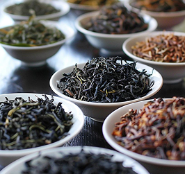
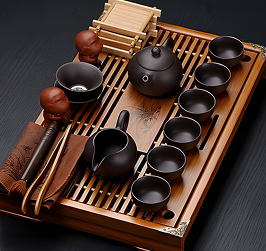

история
Описывать мы будем классическое китайское деление чайной истории на 4 эпохи. Такой подход почти не используется в европейском изучении китайской чайной культуры, но именно он является ключевым в китайской чайной истории. Узнайте об этом больше в разделе истории!

сорта чая
Деление на виды возникло на основе применения различных технологий к изготовлению сухого чая из сырого листа. Для каждого из перечисленных видов, кроме технологии обработки, важны и многие другие нюансы. Узнайте о них больше в ХОЛУ!

посуда
Всё, что может понадобиться для чайной церемонии или просто удобного чаепития, находится в категории посуды. Хочешь узнать для чего она нужна и как ей пользоваться?